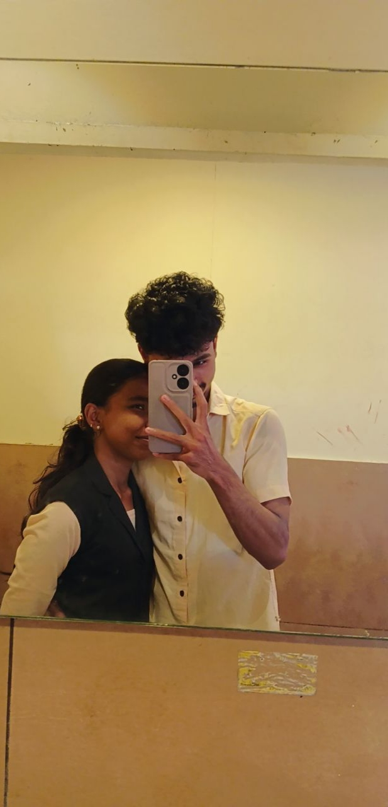
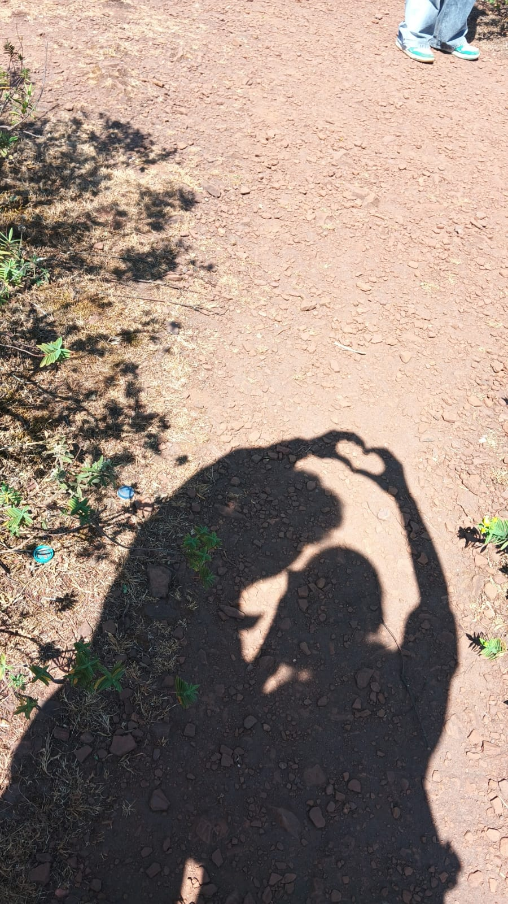
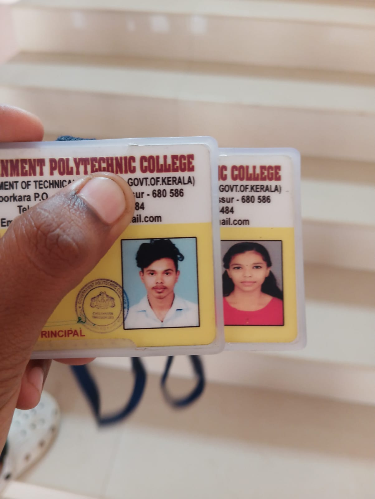
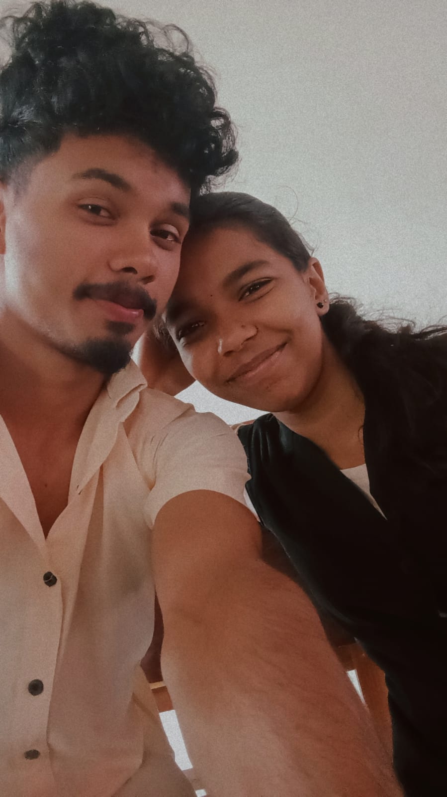
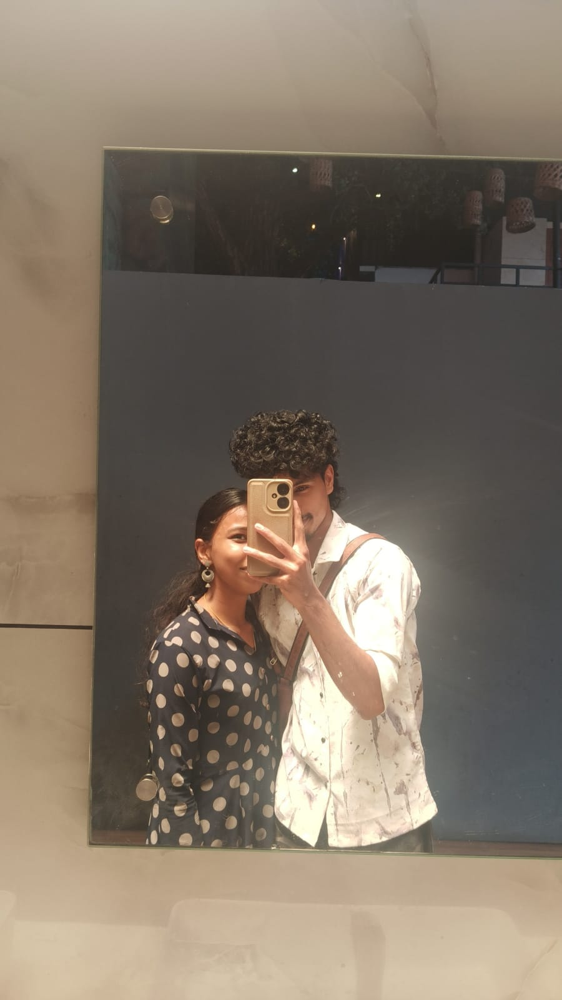
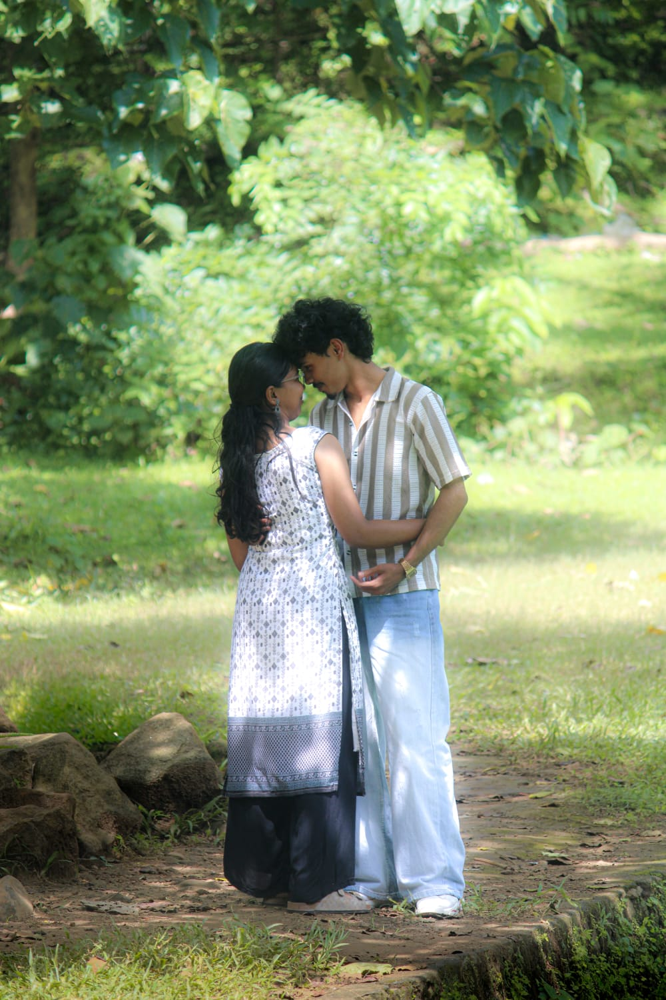

Your voice
Somehow one “hello” from you can make an ordinary day feel softer.
A LOVE THAT TRAVELS MILES
my heart still knows exactly where home is.
Distance is only the space between two places.
It is never the distance between two hearts.
OUR JOURNEY
One date. A thousand feelings. And a journey that keeps becoming more beautiful with every chapter.
There are days when I wish I could simply reach for your hand. Until then, I hold on to your words, your voice and our memories.
Trust, patience and two hearts that keep finding their way back to each other. That's our kind of forever.
02 — WHEN I MISS YOU
Somehow one “hello” from you can make an ordinary day feel softer.
I don't need a perfect day. I just want a day where you're beside me.
The random talks, silly jokes and late-night moments — I miss all of it.
More than anything, I miss the feeling of simply being “us” in the same place.
03 — TRUST
It is measured in the calls we make, the promises we keep, the honesty we share, and the choice to trust each other even when we cannot see each other.
SINCE 18 OCTOBER 2024
OUR MEMORIES






05 — OUR VIDEO
A little video for the person who means everything.
06 — A LETTER FOR YOU
Sometimes I wish I could explain exactly how much I miss you.
Not just in the big moments, but in all the tiny ones — when I want to tell you something immediately, when I hear a song that reminds me of you, or when I simply wish you were sitting next to me.
Long distance isn't always easy. But it has taught me something beautiful: love isn't only about being together every minute. It's about trust.
It's about choosing each other when the miles are real and the waiting feels long.
Until the day the miles disappear, I'll keep choosing you from wherever I am.
Forever yours,
Sachu♡
07 — THE ONLY THING I NEED YOU TO KNOW
You are loved.
You are missed.
You are trusted.
And there will always be a place for you in my heart.